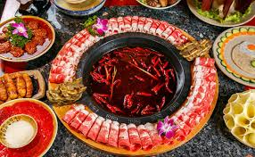
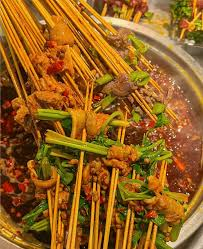
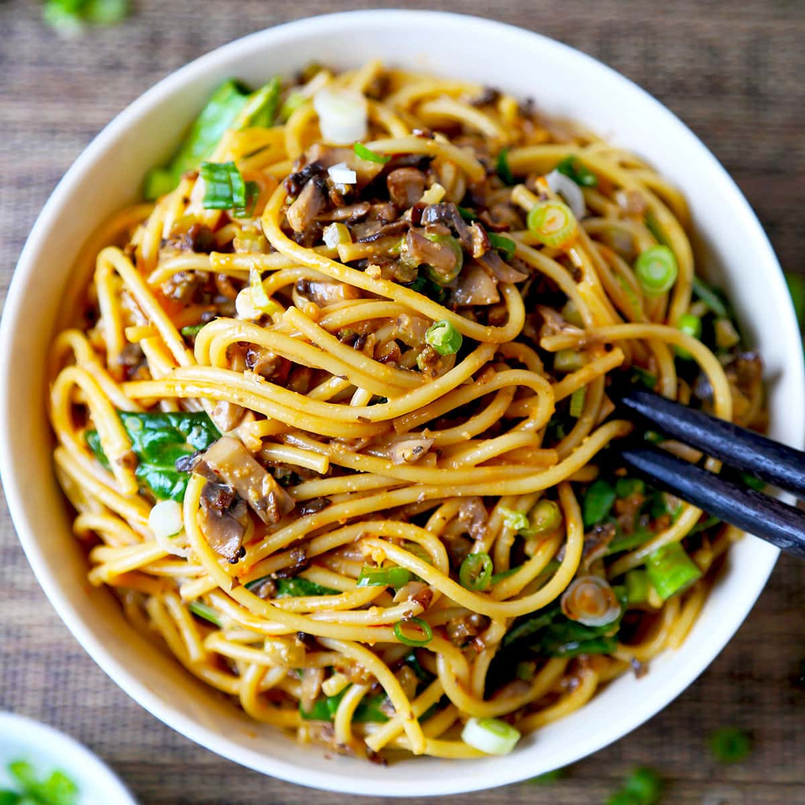
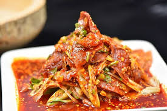
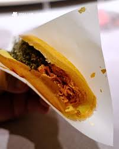

Beef tallow broth + tripe & duck intestine. Recommended: Da Long Yi, Xiao Long Kan.

Skewers in spicy broth – count the sticks for fun. Must-try: Mao Jiao Huo La.

Thin noodles with savory minced pork, sesame paste and chili oil.
Numbing, spicy, and silky tofu – the ultimate rice companion.

Sliced beef offal in fragrant chili oil, crunchy and spicy.

Street snack – crispy outside, soft inside. Sweet or savory fillings.